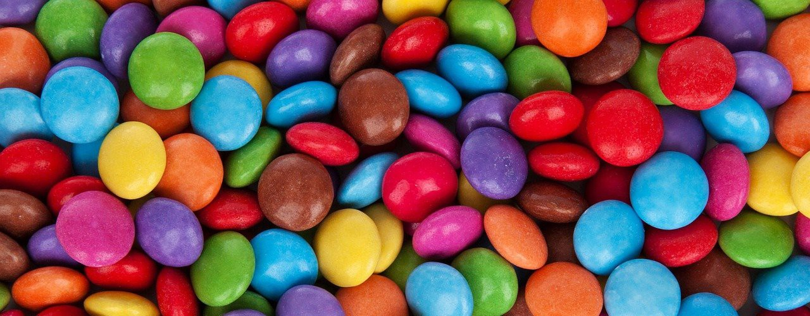

Den första uppgiften i kursen DT193G Fullstack-utveckling med ramverk, handlar om att utvärdera två CSS-ramverk och med hjälp av dem skapa en sammanhängande webbplats. Webbplatsen ska fungera väl på enheter med olika skärmstorlekar och ha en väl fungerade navigering mellan webbplatsens olika undersidor. Webbplatsen måste dessutom dra nytta av de funktioner som finns i respektive ramverk där tabeller, formulär, knappar med mera ska stylas av ramverken.
För att lösa denna uppgift har jag valt att dyka djupare ner i dokumentationen om Bootstrap och Bulma. Dessa har sedan använts för att skapa stilen för de specifika undersidorna. Bootstrap har även använts för att skapa stilen för startsidan och sidan om publicering.
